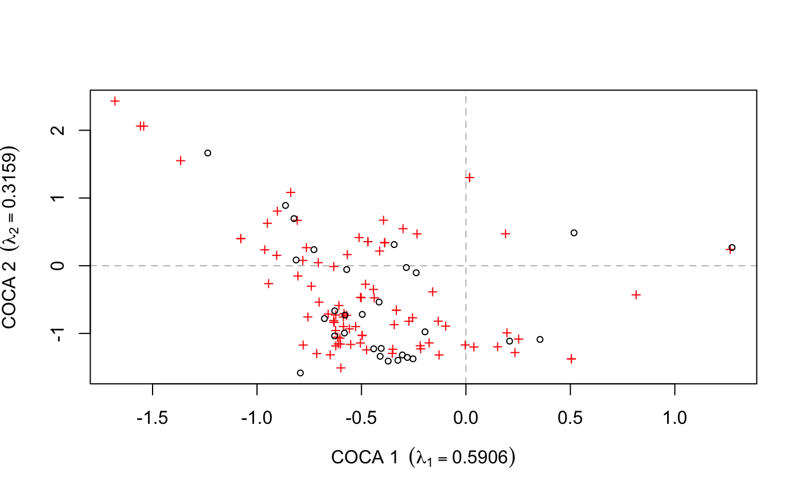
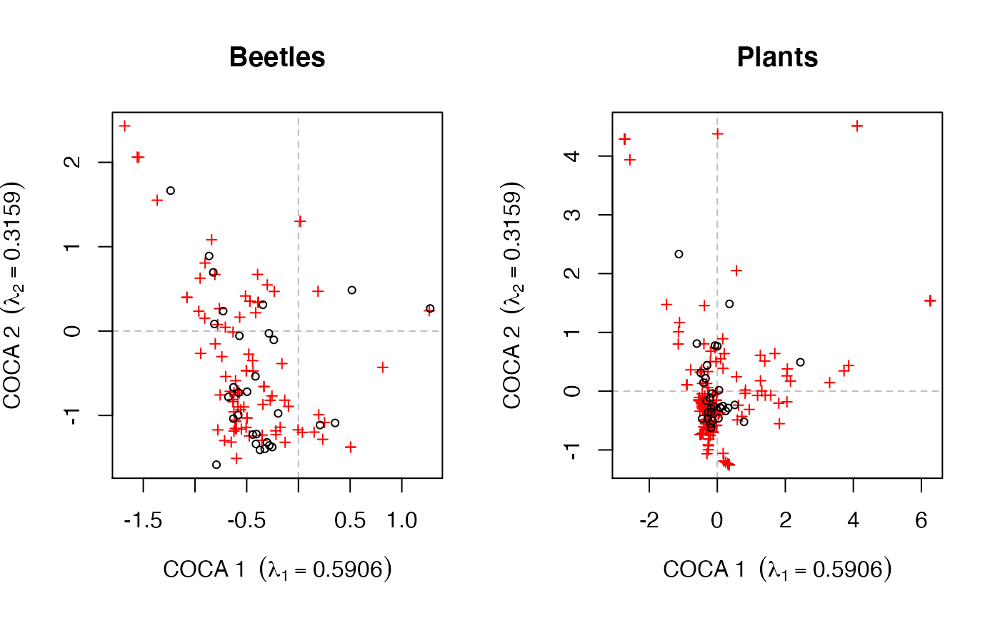
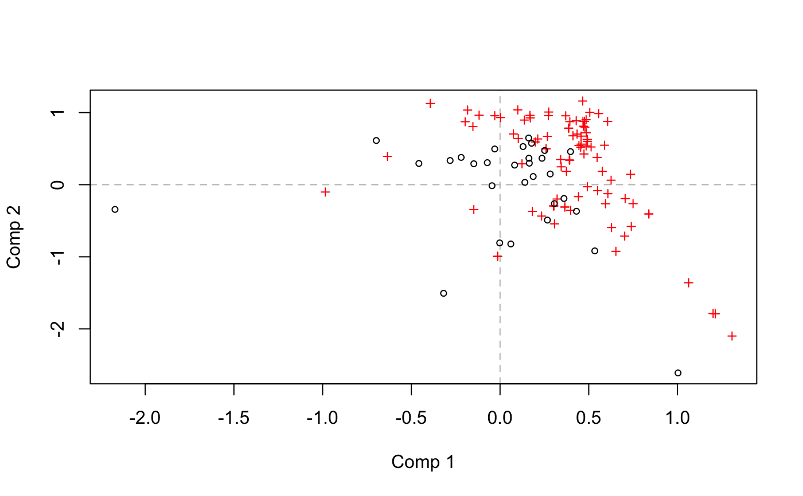
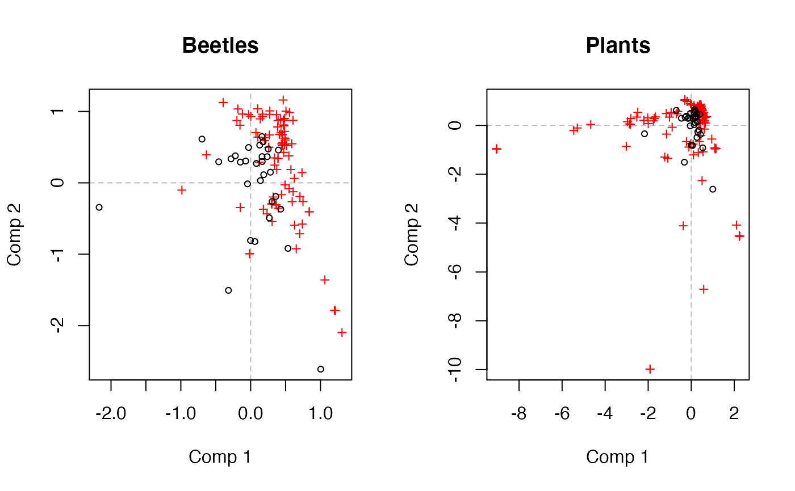

biplots.RdProduces biplots of the response and predictor from the results of a co-correspondence analysis models.
# S3 method for symcoca biplot(x, which = "y1", choices = 1:2, benzecri = TRUE, type = NULL, xlim = NULL, ylim = NULL, col.species = "red", col.sites = "black", pch.species = 3, pch.sites = 1, cex = 0.7, main = "", sub = "", ylab, xlab, ann = par("ann"), axes = TRUE, ...) # S3 method for predcoca biplot(x, which = "response", choices = 1:2, type = NULL, xlim = NULL, ylim = NULL, col.species = "red", col.sites = "black", pch.species = 3, pch.sites = 1, cex = 0.7, main = "", sub = "", ylab, xlab, ann = par("ann"), axes = TRUE, ...)
| x | an object of class |
|---|---|
| which | character; should the response or predictor scores be
plotted. Can be specified in several ways: response choices
are one from |
| choices | a vector of length 2 indicating which predictive CoCA axes to plot. |
| benzecri | logical, should a Benzecri plot be drawn? Such plots
draw species scores, scaled by the quarter root of the respective
eigenvalues, with unscaled site scores. A Benzecri plot is the
recommended biplot for symmetric CoCA. See
|
| type | one of |
| xlim, ylim | limits for the x and y axes. If non supplied, suitable limits will be determined from the data. |
| col.species, col.sites, pch.species, pch.sites | colours and plotting characters used when plotting the species and sites scores. |
| cex | numeric; scaling factor when drawing points or text labels. |
| xlab, ylab | labels for the x and y axes. If non supplied suitable labels are formed from the result object. |
| main, sub | the main and sub titles for the plot. |
| ann | logical, if TRUE plots are annotated and not if FALSE, currently ignored. |
| axes | a logical value indicating whether axes and plot border should be drawn on the plot. |
| ... | other graphical parameters as in 'par' may also be passed as arguments. |
Ter Braak, C.J.F and Schaffers, A.P. (2004) Co-Correspondence Analysis: a new ordination method to relate two community compositions. Ecology 85(3), 834--846
Gavin L. Simpson.
## symmetric CoCA data(beetles) data(plants) ## log transform the beetle data beetles <- log(beetles + 1) ## fit the model bp.sym <- coca(beetles ~ ., data = plants, method = "symmetric")#> #>## biplot of both - Fig 1 in ter Braak & Schaffers (2004) layout(matrix(1:2, ncol = 2)) biplot(bp.sym, which = "y1", main = "Beetles") biplot(bp.sym, which = "y2", main = "Plants")#> #>## recreate Fig 3 in ter Braak & Schaffers (2004) layout(matrix(1:2, ncol = 2)) biplot(bp.pred, which = "response", main = "Beetles") biplot(bp.pred, which = "predictor", main = "Plants")